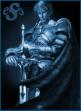

Forums galactiques > Assemblée Galactique : diplomatie officielle > Un ange passe.... et nous quitte.
Pages : 1
| Sandalphon Respect diplomatique : 592  26/07 ETU 12:55 | Score : 11 Détails Détails du commandant Capitaine Kortzanov
Description : Jeune capitaine du protectorat de Dal Ith, elle a perdu sa famille lors d'une nuit particulièrement sombre où son existence a basculé. Aujourd'hui en possession de l'épée de la Vengeance, laissée par l'Archange qui a tué les démons qui ont assassiné sa famille et son peuple, elle compte bien restaurer l'ancienne puissance du Protectorat. Respect diplomatique : 196 Ce commandant ne fait plus partie de la galaxie. Dernière apparition : 05/07 ETU 09:47 "C'est sur ces quelques lignes que le coup est tombé ce matin. Absente depuis le 05/07, officiellement en congés, la Capitaine Irina Kortzanov, Commandante en Chef des Forces Spéciales InterGalactiques, nous a quitté aujourd'hui, sans explications supplémentaires, elle qui devait nous revenir d'ici très peu de temps. Je parle au nom de sa coalition, les FSIG, et j'exprime ma tristesse immense à l'idée que nous ne la reverrons plus. Plus que le guide, le mentor qu'elle fut pour moi et beaucoup d'autres, je vous invite à vous souvenir aussi de l'amie, et aussi de la combattante digne et puissante. A une époque n°1 de notre galaxie, elle a toujours su agir avec diplomatie lorsqu'il le fallait, et tous savaient l'écouter, et la respectaient. Elle n'hésitait jamais également à défendre elle-même ses alliés plus faibles, à nous apprendre les ficelles de la vie de commandant, bref, à aider ses amis. Une pensée émue pour tout ce qui aurait pu être, et qu'elle n'a pas pu faire : le tournoi du Fou des Ombres, auquel elle ne participera plus, les tensions et conflits actuels (nul doute que son avis aurait su éviter de nombreux problèmes...), et j'en passe. J'invite ceux qui le souhaitent à dire quelques mots en sa mémoire. Adieu, Archange respectée, jamais je n'oublierai ce que vous fûtes pour moi... Si par un miracle, vous revenez parmi nous, Capitaine, et que vous lisez ceci, pensez à contacter vos anciens alliés, bien sûr ;) | ||
| Gros Bisous Respect diplomatique : 214  26/07 ETU 12:58 | Score : 3 Détails Ceci est vraiment une triste nouvelle, j'espere qu'elle nous reviendra vite.
Gros Bisous a toi irina, puisse les anges te guider a nous pour ton retour. | ||
| Seigneur Grimaldus Respect diplomatique : 806  26/07 ETU 13:09 | Score : 4 Détails "Le Capitaine Kortzanov était une grande personne...
Une humaine qui avait vue pendant un moment une partie de ce que je suis... Je pense qu'elle est ce qui se rapprochait le plus de...d'une amie. Et cela est rare,de part son ascendance humaine. Mais elle était plus que cela. J'espère qu'elle reposera en paix,et que de là où elel est, elle contemple cette galaxie et apprenne enfin à connaitre chacun d'entre nous... Adieu, capitaine..." | ||
| Commandeur Valorys Respect diplomatique : 865  26/07 ETU 13:30 | Score : 4 Détails Le commandeur se leva la mine endeuillée par la nouvelle
Mes chers amis Aujourd'hui c'est un grand commandant qui nous quitte mais aussi une grande amie que je perds. Elle fut de tous les combats pour la paix, sa diplomatie aidant à résoudre les conflits. Cette galaxie perds une partisane de la paix et de la démocratie. Un deuil national sera fait sur Comenor et nos Croiseurs tireront des salves en son honneur. Puisse son âme être accueillie au Panthéon des Héros Le commandeur se rassit abattu par la nouvelle | ||
| psycho Respect diplomatique : 4  26/07 ETU 18:38 | Score : 3 Détails la coalition des FSIG en deuil:
un grand commandant vient de nous quittés. elle qui etait le pilier de notre coalition, prete a aidée tous ceux qui etait dans le besoin c est une grande perte pour nous,nous la regretterons remerciement au commandant: gros bisous commandeur valorys seigneur grimaldus merci pour elle. | ||
| La Cité des Vissäyan Respect diplomatique : 171  27/07 ETU 04:00 | Score : 4 Détails La jeune femme se leva et modestement prononça :
"Au revoir et non Adieu chère Dame Irina... La Cité ne vous oubliera pas et vous remercie encore pour votre bienveillance..." | ||
| Le fou des Ombres Respect diplomatique : 204  30/07 ETU 15:19  | Score : 2 Détails Mieux vaut tard que jamais me direz vous, Mouahaha (hrp : pas le temps ou la motivation pour apo ces derniers temps)
Hum, voici une affaire sérieuse. Cette chère Irina. Serais-ce mes lettres d’amour si tendres qui l’auraient fait fuir ? Je défie quiconque de parler de harcèlement moral !! Cette femme, dire que j’aurais presque essayé d’être fidèle pour elle. Tss… Si je trouve celui qui lui a fait ça. Comment, ça aurait pu être nous ? Oh, mouahaha, pas de sottises ! Si nous lui avions déclaré la guerre, je l’aurai mené avec amour ! Tous mes Croiseurs Ioniques, sans exception, font sonner leur carcasse en son honneur, évitez de rester sur leur route. Et je jure de découvrir qui est le coupable de sa disparition !! | ||
| Shino Respect diplomatique : 32  30/07 ETU 15:38 | Score : 2 Détails Que son âme repose en paix. Je ne la connaissait pas vraiment, mais si vous êtes autant à l'apprècier, c'est qu'elle devait être quelqu'un de bien.
Cher fou des ombres, Quelque fois la solitude est suffisante pour ne plus avoir envie de vivre. Il n'y a pas tout le temps des fautifs. Je suis sûre que son âme reviendra parmis nous un jour. |
Pages : 1
Forums galactiques > Assemblée Galactique : diplomatie officielle > Un ange passe.... et nous quitte.